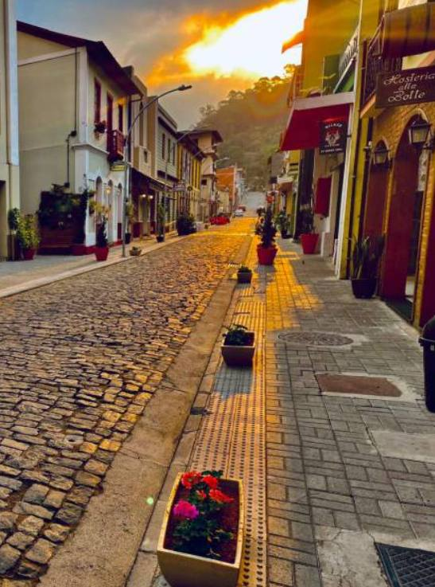
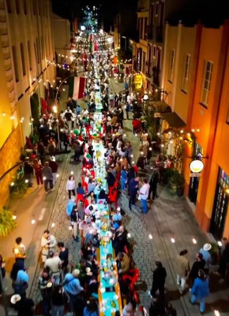
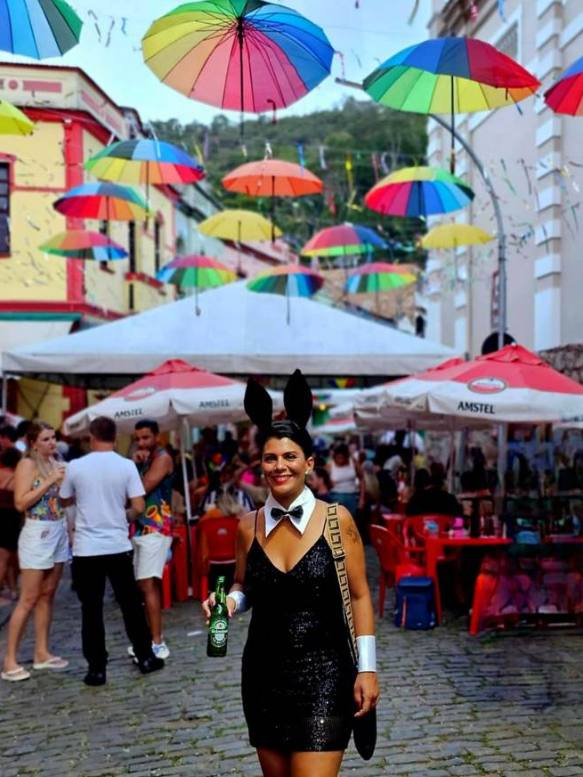
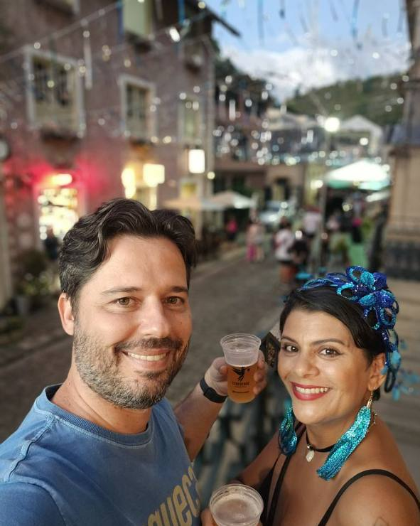

Rua do Lazer: onde a arquitetura italiana e a culinária capixaba se encontram em Santa Teresa
Há ruas que são apenas caminho, e há ruas que são destino. A Rua do Lazer, no coração do Centro Histórico de Santa Teresa, é desse segundo tipo. Batizada oficialmente de Rua Coronel Bonfim Júnior, mas conhecida por todos pelo nome que traduz sua vocação, ela concentra em poucos metros o que há de mais autêntico na cidade: casarões centenários preservados e uma culinária que carrega, ainda hoje, o sabor das receitas trazidas pelos imigrantes italianos há um século e meio.
Para quem pensa em morar ou investir em Santa Teresa, entender o que essa rua representa é entender a própria alma da cidade.
Um patrimônio arquitetônico que resistiu ao tempo
Caminhar pela Rua do Lazer é como abrir um álbum de fotografias em tamanho real. Os casarões que margeiam a rua preservam características do Ecletismo do final do século XIX — estilo que chegou ao Brasil justamente no período de maior intensidade da imigração europeia e que, em Santa Teresa, ganhou contornos próprios.
Um exemplo estudado por pesquisadores de arquitetura é a residência centenária localizada no número 209 da rua: uma construção que rompe com o padrão colonial de fachadas coladas ao limite do lote, recuando parte do edifício e abrindo espaço para jardins frontais — uma solução que reflete os hábitos e as referências estéticas que os próprios imigrantes trouxeram consigo. Esse tipo de detalhe, replicado em variações por toda a rua, é o que dá à Rua do Lazer sua atmosfera única: um conjunto arquitetônico coeso, que conta a história da colonização sem precisar de nenhuma placa explicativa.

A prefeitura e a comunidade local mantêm esse patrimônio vivo — não como um cenário congelado no tempo, mas como um espaço que continua em uso, recebendo moradores, comerciantes e visitantes todos os dias.
E é justamente esse uso cotidiano que rendeu à rua algumas tradições que não estão em nenhum roteiro turístico. Uma das mais bonitas são os encontros organizados pelos próprios moradores, em que cada casa leva um prato para dividir com os vizinhos: uma massa da receita da avó, uma polenta, um doce colonial, uma garrafa de vinho da colônia. As mesas se juntam na calçada, cada um prova o que o outro fez, e o que era um jantar comum vira uma conversa que se estende até a noite avançar.

O point gastronômico mais tradicional da cidade
Se de dia a Rua do Lazer encanta pela arquitetura, é ao entardecer que ela realmente ganha vida. É lá que se concentram os bares, cafés e restaurantes mais tradicionais de Santa Teresa, e o cardápio da rua é, em essência, um mapa da herança italiana da região.

Entre os pratos que não faltam nas mesas está a massa artesanal, feita à mão seguindo receitas de família, servida com molhos que vão do tradicional ao autoral — como raviólis recheados e pratos de carne ao molho madeira, comuns nos bistrôs contemporâneos da rua. A polenta, acompanhada do queijo produzido localmente, é outro símbolo da culinária teresense, assim como as linguiças artesanais e os pratos à base de carne suína e bovina, preparados em receitas passadas de geração em geração. Entre as casas mais conhecidas da rua está a Gioconda Cantina Italiana, que reúne massas, lasanhas e risotos e virou endereço obrigatório por causa do Porco na Lata — costelinha frita na banha de porco caipira, servida com aipim crocante, vinagrete e farofa.
Para fechar a refeição, os doces coloniais e os vinhos produzidos nas vinícolas da própria região — Santa Teresa é o maior produtor de vinho do Espírito Santo — completam a experiência. Nos finais de semana, a rua costuma ganhar música ao vivo, transformando o jantar em um verdadeiro programa cultural, com turistas e moradores compartilhando mesas, histórias e boas garrafas. Quem quer estender a noite tem no Red Rock Music Pub, no número 77, o endereço certo: um pub de decoração dedicada à história do rock, com chope artesanal próprio e apresentações de bandas autorais e covers nas noites de sexta e sábado.
Em datas especiais, a rua se transforma por completo. No Natal, as fachadas centenárias ganham luzes e enfeites, e não é raro que a ceia acabe compartilhada entre famílias diferentes, com os pratos passando de mesa em mesa. No Ano Novo, a confraternização se estende pela calçada, com brindes, música e aquele clima de descontração em que morador e visitante acabam sentados juntos sem nem saber quem é quem. São momentos que explicam melhor do que qualquer descrição por que ela se chama Rua do Lazer.

Um símbolo do que faz Santa Teresa ser única
A Rua do Lazer resume, em um único endereço, os dois pilares que tornam Santa Teresa um destino tão especial: a preservação de um patrimônio arquitetônico que remonta à colonização italiana, e uma cultura gastronômica viva, que segue sendo reinventada por quem mora ali. É esse equilíbrio entre memória e vida cotidiana que atrai visitantes o ano inteiro — e que também valoriza cada vez mais os imóveis do entorno, seja no Centro Histórico ou nas áreas próximas ao Circuito Caravaggio.
Eu, Milla Camata, conheço cada canto dessa Santa Teresa que preserva sua história sem parar no tempo. Se você sonha em ter um imóvel perto desse cenário — seja para viver, para investir ou para ter um refúgio de fim de semana —, fale com a gente. A cidade que guarda as receitas dos primeiros imigrantes também guarda, hoje, algumas das melhores oportunidades imobiliárias do interior do Espírito Santo.
Quer conhecer os terrenos disponíveis perto do Centro Histórico e do Circuito Caravaggio?
Falar com a Milla no WhatsAppFotos: arquivo pessoal. A Prefeitura de Santa Teresa registra o município como maior produtor de uva e vinho do Espírito Santo, com cerca de 80% da produção estadual; uma nota do Ministério da Agricultura citada pela imprensa em 2024 aponta participação em torno de metade da produção de vinhos, espumantes e sucos de uva. Horários, cardápios e programação musical dos estabelecimentos podem mudar — vale confirmar antes de ir.